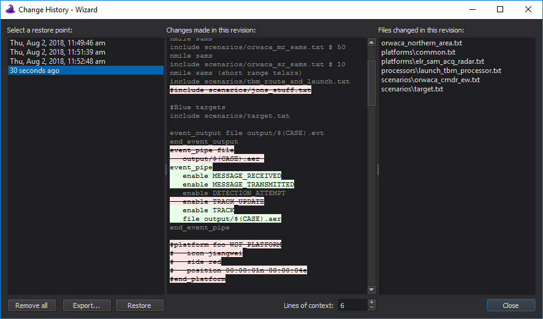

Change History - Wizard¶
To use the automatic change history option, it must first be enabled in the Preferences.
The Change History window provides an interface to backing up a project and restoring a project to earlier points of time. It is accessible by opening a project and selecting Project –> Change History…
By default, project backup is disabled. If this is undesirable, it can be enabled by checking the “Enable project backup” checkbox. All restore points can be deleted with the “Remove all” button.
The database file name is based on the associated Wizard project file
name and is located in the same directory as the project file. For
example, if the project file name is myproject.afproj, then the
database file name will be myproject.afproj.changes.db. If
there is no project file, then the database file name will be
wizard_change_history.db and will reside in the directory
of the file that was opened. The database file can safely be deleted
with the feature disabled or while Wizard is not running.
The window consists of three panes. The left pane shows a list of all available project restore points, or revisions, sorted from oldest to newest. After making a selection, you may export the project as it existed at the selected revision to an external folder, or you can restore your files to the selected revision. Your current files will be backed up before performing the restore.
When a revision is selected in the left pane, the middle pane will show the changes that were recorded for the revision with respect to its direct predecessor. The changes include changes to files, the project working directory, and the project startup files. The file changes are shown as a unified diff. Lines of context (the number of unchanged lines shown around changed lines) are shown for assistance. The number of lines of context can be adjusted below the middle pane.
The right pane shows the list of files that were added, deleted, or modified in the selected revision. When selecting a file in this pane, the middle pane will automatically scroll to the appropriate section in the diff to view the changes for that file.
Current Limitations¶
Currently, Wizard only monitors included files for backup purposes. When a file is not included (potentially when switching startup files, for example), its data will remain in the database but changes to the file will no longer be recorded until it is included again.